2025 Higher Chemistry - Paper 2 marking instructions
Source: Scottish Qualifications Authority (SQA) / Qualifications Scotland. This is a StemInteract HTML companion, not an official HTML edition. Selectable text is supplied alongside original page images. Use the images or original PDF for equations, powers, fractions, vector notation, tables and diagrams; text extraction cannot fully preserve mathematical layout.
Jump to a question
PDF page 1
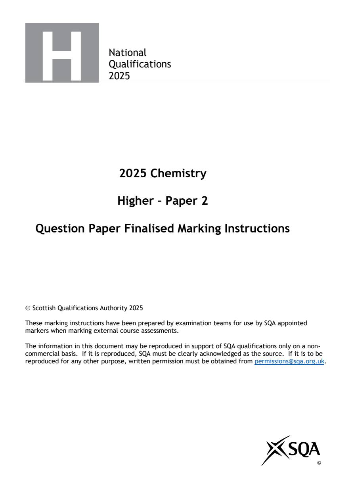
Selectable page text
National
Qualifications
2025
2025 Chemistry
Higher – Paper 2
Question Paper Finalised Marking Instructions
© Scottish Qualifications Authority 2025
These marking instructions have been prepared by examination teams for use by SQA appointed
markers when marking external course assessments.
The information in this document may be reproduced in support of SQA qualifications only on a non-
commercial basis. If it is reproduced, SQA must be clearly acknowledged as the source. If it is to be
reproduced for any other purpose, written permission must be obtained from permissions@sqa.org.uk.
©PDF page 2
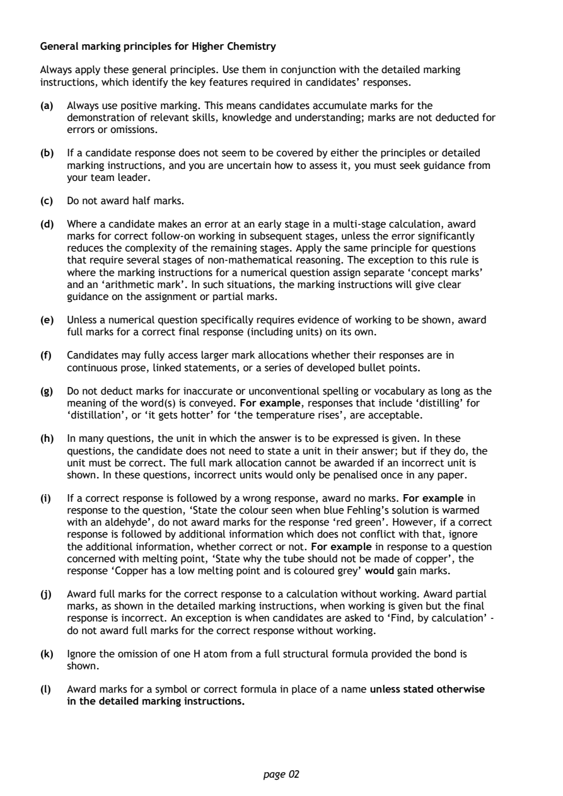
Selectable page text
General marking principles for Higher Chemistry
Always apply these general principles. Use them in conjunction with the detailed marking
instructions, which identify the key features required in candidates’ responses.
(a) Always use positive marking. This means candidates accumulate marks for the
demonstration of relevant skills, knowledge and understanding; marks are not deducted for
errors or omissions.
(b) If a candidate response does not seem to be covered by either the principles or detailed
marking instructions, and you are uncertain how to assess it, you must seek guidance from
your team leader.
(c) Do not award half marks.
(d) Where a candidate makes an error at an early stage in a multi-stage calculation, award
marks for correct follow-on working in subsequent stages, unless the error significantly
reduces the complexity of the remaining stages. Apply the same principle for questions
that require several stages of non-mathematical reasoning. The exception to this rule is
where the marking instructions for a numerical question assign separate ‘concept marks’
and an ‘arithmetic mark’. In such situations, the marking instructions will give clear
guidance on the assignment or partial marks.
(e) Unless a numerical question specifically requires evidence of working to be shown, award
full marks for a correct final response (including units) on its own.
(f) Candidates may fully access larger mark allocations whether their responses are in
continuous prose, linked statements, or a series of developed bullet points.
(g) Do not deduct marks for inaccurate or unconventional spelling or vocabulary as long as the
meaning of the word(s) is conveyed. For example, responses that include ‘distilling’ for
‘distillation’, or ‘it gets hotter’ for ‘the temperature rises’, are acceptable.
(h) In many questions, the unit in which the answer is to be expressed is given. In these
questions, the candidate does not need to state a unit in their answer; but if they do, the
unit must be correct. The full mark allocation cannot be awarded if an incorrect unit is
shown. In these questions, incorrect units would only be penalised once in any paper.
(i) If a correct response is followed by a wrong response, award no marks. For example in
response to the question, ‘State the colour seen when blue Fehling’s solution is warmed
with an aldehyde’, do not award marks for the response ‘red green’. However, if a correct
response is followed by additional information which does not conflict with that, ignore
the additional information, whether correct or not. For example in response to a question
concerned with melting point, ‘State why the tube should not be made of copper’, the
response ‘Copper has a low melting point and is coloured grey’ would gain marks.
(j) Award full marks for the correct response to a calculation without working. Award partial
marks, as shown in the detailed marking instructions, when working is given but the final
response is incorrect. An exception is when candidates are asked to ‘Find, by calculation’ -
do not award full marks for the correct response without working.
(k) Ignore the omission of one H atom from a full structural formula provided the bond is
shown.
(l) Award marks for a symbol or correct formula in place of a name unless stated otherwise
in the detailed marking instructions.
page 02PDF page 3
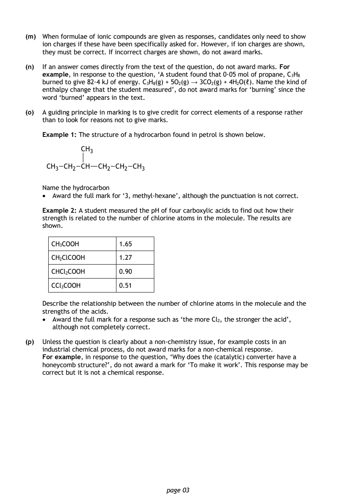
Selectable page text
(m) When formulae of ionic compounds are given as responses, candidates only need to show
ion charges if these have been specifically asked for. However, if ion charges are shown,
they must be correct. If incorrect charges are shown, do not award marks.
(n) If an answer comes directly from the text of the question, do not award marks. For
example, in response to the question, ‘A student found that 0·05 mol of propane, C₃H₈
burned to give 82·4 kJ of energy. C₃H₈(g) + 5O₂(g) → 3CO₂(g) + 4H₂O(ℓ). Name the kind of
enthalpy change that the student measured’, do not award marks for ‘burning’ since the
word ‘burned’ appears in the text.
(o) A guiding principle in marking is to give credit for correct elements of a response rather
than to look for reasons not to give marks.
Example 1: The structure of a hydrocarbon found in petrol is shown below.
Name the hydrocarbon
• Award the full mark for ‘3, methyl-hexane’, although the punctuation is not correct.
Example 2: A student measured the pH of four carboxylic acids to find out how their
strength is related to the number of chlorine atoms in the molecule. The results are
shown.
CH₃COOH 1.65
CH₂ClCOOH 1.27
CHCl₂COOH 0.90
CCl₃COOH 0.51
Describe the relationship between the number of chlorine atoms in the molecule and the
strengths of the acids.
• Award the full mark for a response such as ‘the more Cl₂, the stronger the acid’,
although not completely correct.
(p) Unless the question is clearly about a non-chemistry issue, for example costs in an
industrial chemical process, do not award marks for a non-chemical response.
For example, in response to the question, ‘Why does the (catalytic) converter have a
honeycomb structure?’, do not award a mark for ‘To make it work’. This response may be
correct but it is not a chemical response.
page 03PDF page 4
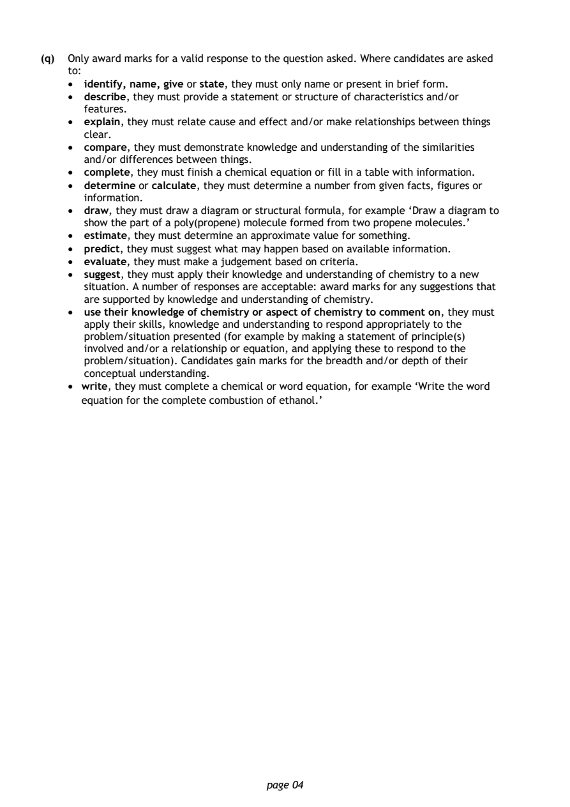
Selectable page text
(q) Only award marks for a valid response to the question asked. Where candidates are asked
to:
• identify, name, give or state, they must only name or present in brief form.
• describe, they must provide a statement or structure of characteristics and/or
features.
• explain, they must relate cause and effect and/or make relationships between things
clear.
• compare, they must demonstrate knowledge and understanding of the similarities
and/or differences between things.
• complete, they must finish a chemical equation or fill in a table with information.
• determine or calculate, they must determine a number from given facts, figures or
information.
• draw, they must draw a diagram or structural formula, for example ‘Draw a diagram to
show the part of a poly(propene) molecule formed from two propene molecules.’
• estimate, they must determine an approximate value for something.
• predict, they must suggest what may happen based on available information.
• evaluate, they must make a judgement based on criteria.
• suggest, they must apply their knowledge and understanding of chemistry to a new
situation. A number of responses are acceptable: award marks for any suggestions that
are supported by knowledge and understanding of chemistry.
• use their knowledge of chemistry or aspect of chemistry to comment on, they must
apply their skills, knowledge and understanding to respond appropriately to the
problem/situation presented (for example by making a statement of principle(s)
involved and/or a relationship or equation, and applying these to respond to the
problem/situation). Candidates gain marks for the breadth and/or depth of their
conceptual understanding.
• write, they must complete a chemical or word equation, for example ‘Write the word
equation for the complete combustion of ethanol.’
page 04PDF page 5
Paper 2, Question 1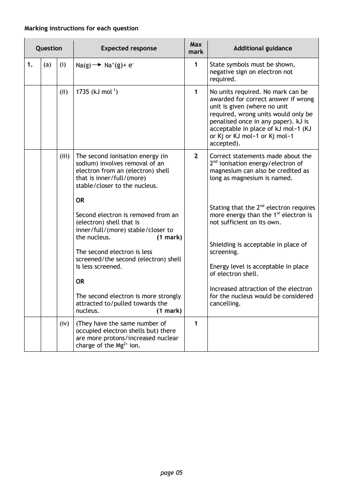
Selectable page text
Marking instructions for each question
Max
Question Expected response Additional guidance
mark
1. (a) (i) Na(g) Na⁺(g)+ e⁻ 1 State symbols must be shown,
negative sign on electron not
required.
(ii) 1735 (kJ mol⁻¹) 1 No units required. No mark can be
awarded for correct answer if wrong
unit is given (where no unit
required, wrong units would only be
penalised once in any paper). kJ is
acceptable in place of kJ mol−1 (KJ
or Kj or KJ mol−1 or Kj mol−1
accepted).
(iii) The second ionisation energy (in 2 Correct statements made about the
sodium) involves removal of an 2ⁿ^{d} ionisation energy/electron of
electron from an (electron) shell magnesium can also be credited as
that is inner/full/(more) long as magnesium is named.
stable/closer to the nucleus.
OR
Stating that the 2ⁿ^{d} electron requires
Second electron is removed from an more energy than the 1^{s}^{t} electron is
(electron) shell that is not sufficient on its own.
inner/full/(more) stable/closer to
the nucleus. (1 mark)
Shielding is acceptable in place of
The second electron is less screening.
screened/the second (electron) shell
is less screened. Energy level is acceptable in place
of electron shell.
OR
Increased attraction of the electron
The second electron is more strongly for the nucleus would be considered
attracted to/pulled towards the cancelling.
nucleus. (1 mark)
(iv) (They have the same number of 1
occupied electron shells but) there
are more protons/increased nuclear
charge of the Mg²⁺ ion.
page 05PDF page 6
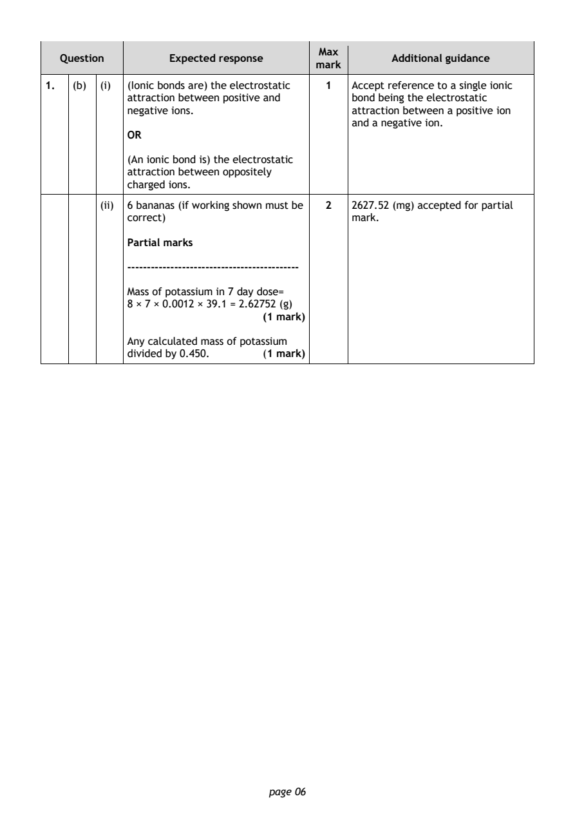
Selectable page text
Max
Question Expected response Additional guidance
mark
1. (b) (i) (Ionic bonds are) the electrostatic 1 Accept reference to a single ionic
attraction between positive and bond being the electrostatic
negative ions. attraction between a positive ion
and a negative ion.
OR
(An ionic bond is) the electrostatic
attraction between oppositely
charged ions.
(ii) 6 bananas (if working shown must be 2 2627.52 (mg) accepted for partial
correct) mark.
Partial marks
--------------------------------------------
Mass of potassium in 7 day dose=
8 × 7 × 0.0012 × 39.1 = 2.62752 (g)
(1 mark)
Any calculated mass of potassium
divided by 0.450. (1 mark)
page 06PDF page 7
Paper 2, Question 2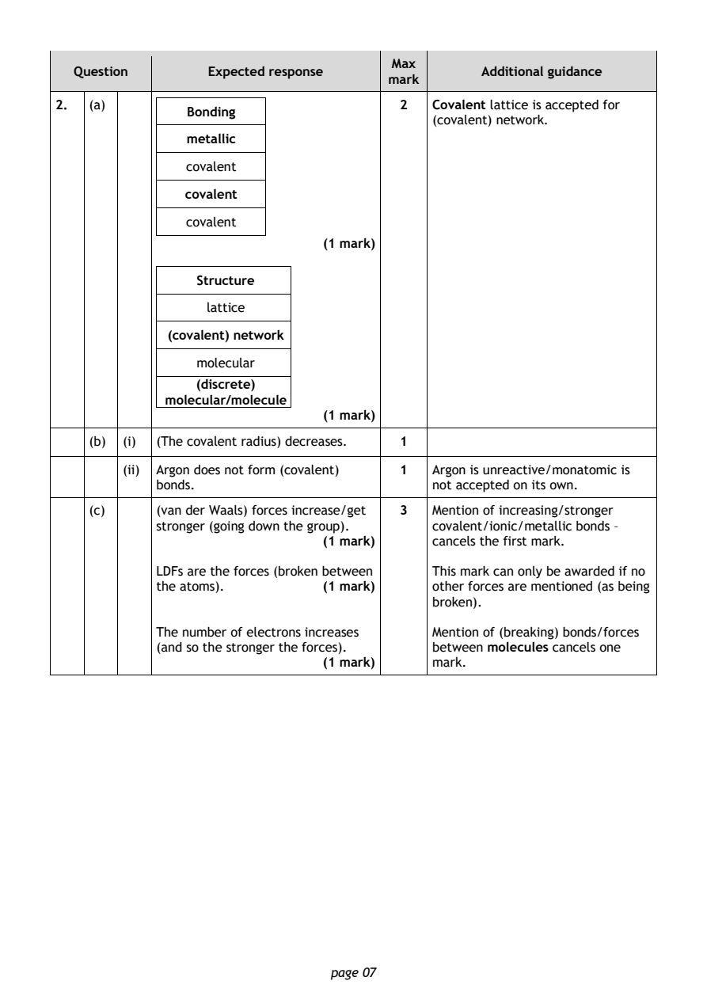
Selectable page text
Max
Question Expected response Additional guidance
mark
2. (a) 2 Covalent lattice is accepted for
Bonding
(covalent) network.
metallic
covalent
covalent
covalent
(1 mark)
Structure
lattice
(covalent) network
molecular
(discrete)
molecular/molecule
(1 mark)
(b) (i) (The covalent radius) decreases. 1
(ii) Argon does not form (covalent) 1 Argon is unreactive/monatomic is
bonds. not accepted on its own.
(c) (van der Waals) forces increase/get 3 Mention of increasing/stronger
stronger (going down the group). covalent/ionic/metallic bonds –
(1 mark) cancels the first mark.
LDFs are the forces (broken between This mark can only be awarded if no
the atoms). (1 mark) other forces are mentioned (as being
broken).
The number of electrons increases Mention of (breaking) bonds/forces
(and so the stronger the forces). b e t w een molecules cancels one
(1 mark) mark.
page 07PDF page 8
Paper 2, Question 3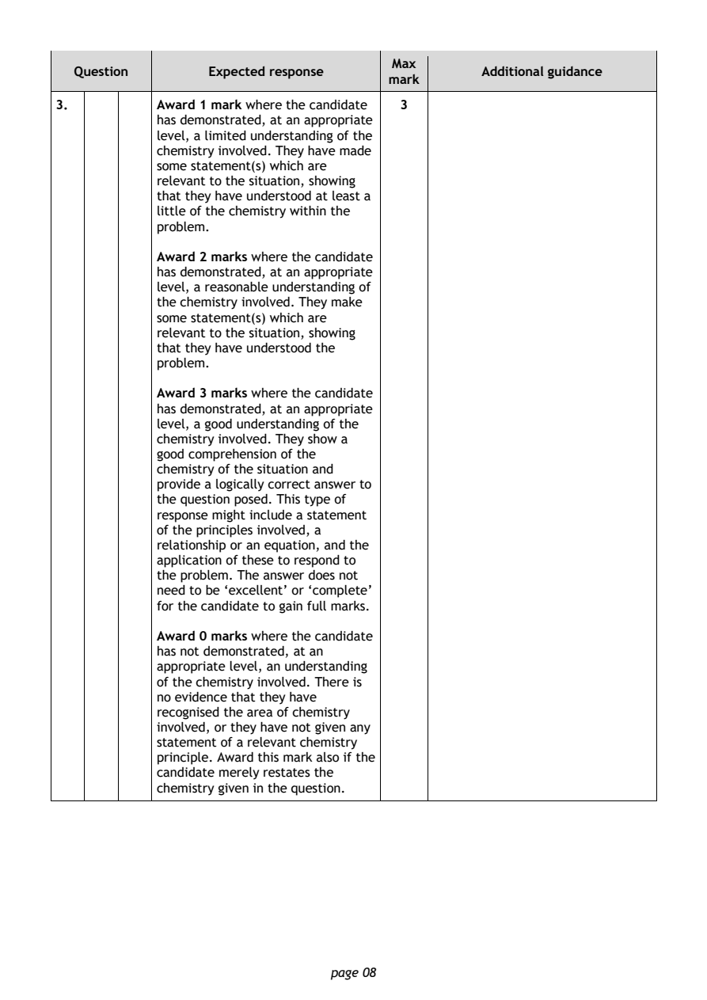
Selectable page text
Max
Question Expected response Additional guidance
mark
3. Award 1 mark where the candidate 3
has demonstrated, at an appropriate
level, a limited understanding of the
chemistry involved. They have made
some statement(s) which are
relevant to the situation, showing
that they have understood at least a
little of the chemistry within the
problem.
Award 2 marks where the candidate
has demonstrated, at an appropriate
level, a reasonable understanding of
the chemistry involved. They make
some statement(s) which are
relevant to the situation, showing
that they have understood the
problem.
Award 3 marks where the candidate
has demonstrated, at an appropriate
level, a good understanding of the
chemistry involved. They show a
good comprehension of the
chemistry of the situation and
provide a logically correct answer to
the question posed. This type of
response might include a statement
of the principles involved, a
relationship or an equation, and the
application of these to respond to
the problem. The answer does not
need to be ‘excellent’ or ‘complete’
for the candidate to gain full marks.
Award 0 marks where the candidate
has not demonstrated, at an
appropriate level, an understanding
of the chemistry involved. There is
no evidence that they have
recognised the area of chemistry
involved, or they have not given any
statement of a relevant chemistry
principle. Award this mark also if the
candidate merely restates the
chemistry given in the question.
page 08PDF page 9
Paper 2, Question 4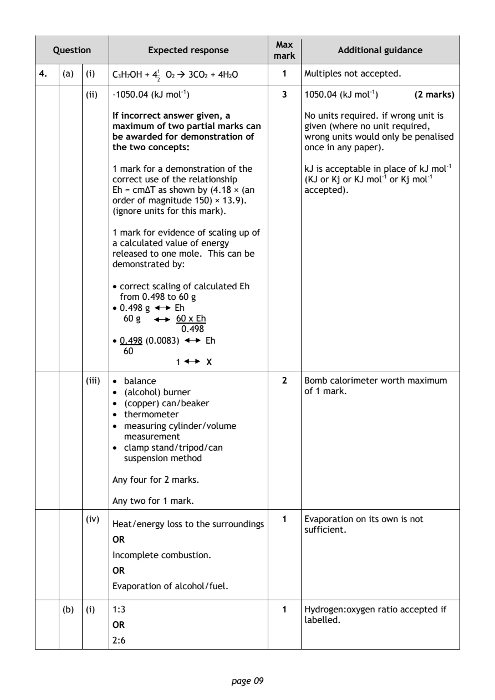
Selectable page text
Max
Question Expected response Additional guidance
mark
4. (a) (i) C₃H₇OH + 4¹₂ O₂→ 3CO₂ + 4H₂O 1 Multiples not accepted.
(ii) -1050.04 (kJ mol⁻¹) 3 1050.04 (kJ mol⁻¹) (2 marks)
If incorrect answer given, a No units required. if wrong unit is
maximum of two partial marks can given (where no unit required,
be awarded for demonstration of wrong units would only be penalised
the two concepts: once in any paper).
1 mark for a demonstration of the kJ is acceptable in place of kJ mol⁻¹
correct use of the relationship (KJ or Kj or KJ mol⁻¹ or Kj mol⁻¹
Eh = cm∆T as shown by (4.18 × (an accepted).
order of magnitude 150) × 13.9).
(ignore units for this mark).
1 mark for evidence of scaling up of
a calculated value of energy
released to one mole. This can be
demonstrated by:
• correct scaling of calculated Eh
from 0.498 to 60 g
• 0.498 g Eh
60 g 60 x Eh
0.498
• 0.498 (0.0083) Eh
60
1 X
(iii) • balance 2 Bomb calorimeter worth maximum
• (alcohol) burner of 1 mark.
• (copper) can/beaker
• thermometer
• measuring cylinder/volume
measurement
• clamp stand/tripod/can
suspension method
Any four for 2 marks.
Any two for 1 mark.
(iv) 1 Evaporation on its own is not
Heat/energy loss to the surroundings
sufficient.
OR
Incomplete combustion.
OR
Evaporation of alcohol/fuel.
(b) (i) 1:3 1 Hydrogen:oxygen ratio accepted if
labelled.
OR
2:6
page 09PDF page 10
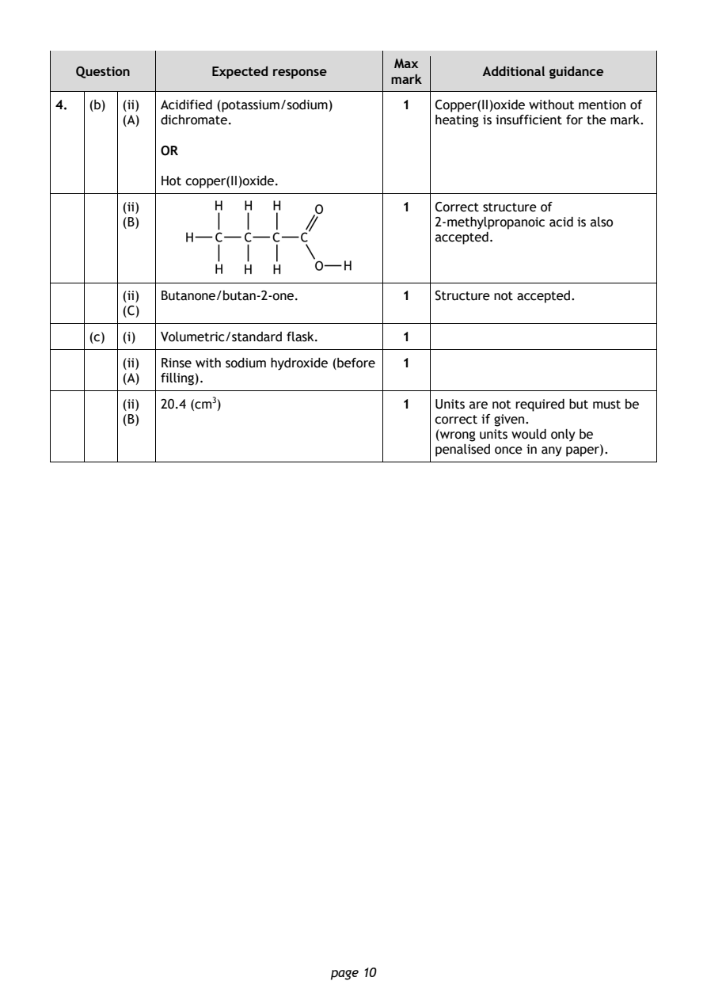
Selectable page text
Max
Question Expected response Additional guidance
mark
4. (b) (ii) Acidified (potassium/sodium) 1 Copper(II)oxide without mention of
(A) dichromate. heating is insufficient for the mark.
OR
Hot copper(II)oxide.
(ii) 1 Correct structure of
(B) 2-methylpropanoic acid is also
accepted.
(ii) Butanone/butan-2-one. 1 Structure not accepted.
(C)
(c) (i) Volumetric/standard flask. 1
(ii) Rinse with sodium hydroxide (before 1
(A) filling).
(ii) 20.4 (cm³) 1 Units are not required but must be
(B) correct if given.
(wrong units would only be
penalised once in any paper).
page 10PDF page 11
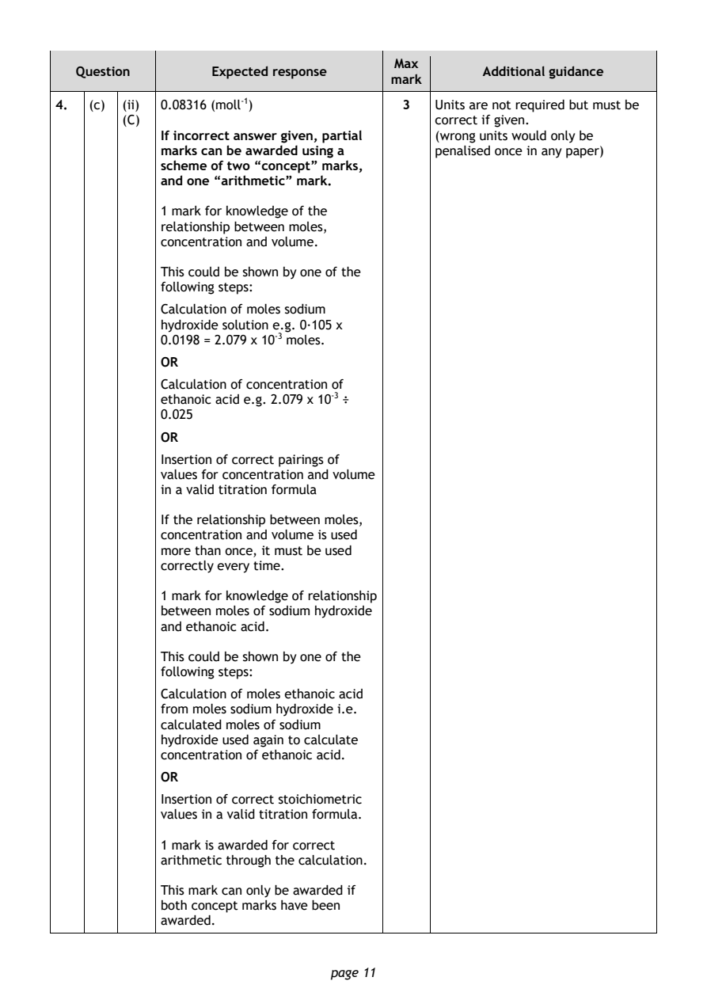
Selectable page text
Max
Question Expected response Additional guidance
mark
4. (c) (ii) 0.08316 (moll⁻¹) 3 Units are not required but must be
(C) correct if given.
If incorrect answer given, partial (wrong units would only be
marks can be awarded using a penalised once in any paper)
scheme of two “concept” marks,
and one “arithmetic” mark.
1 mark for knowledge of the
relationship between moles,
concentration and volume.
This could be shown by one of the
following steps:
Calculation of moles sodium
hydroxide solution e.g. 0·105 x
0.0198 = 2.079 x 10⁻³ moles.
OR
Calculation of concentration of
ethanoic acid e.g. 2.079 x 10⁻³ ÷
0.025
OR
Insertion of correct pairings of
values for concentration and volume
in a valid titration formula
If the relationship between moles,
concentration and volume is used
more than once, it must be used
correctly every time.
1 mark for knowledge of relationship
between moles of sodium hydroxide
and ethanoic acid.
This could be shown by one of the
following steps:
Calculation of moles ethanoic acid
from moles sodium hydroxide i.e.
calculated moles of sodium
hydroxide used again to calculate
concentration of ethanoic acid.
OR
Insertion of correct stoichiometric
values in a valid titration formula.
1 mark is awarded for correct
arithmetic through the calculation.
This mark can only be awarded if
both concept marks have been
awarded.
page 11PDF page 12
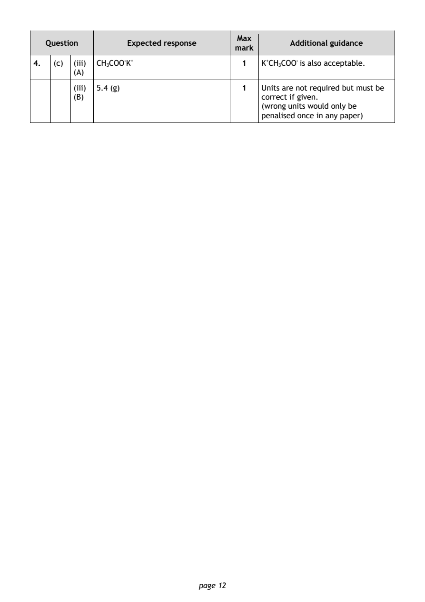
Selectable page text
Max
Question Expected response Additional guidance
mark
4. (c) (iii) CH₃COO⁻K⁺ 1 K⁺CH₃COO⁻ is also acceptable.
(A)
(iii) 5.4 (g) 1 Units are not required but must be
(B) correct if given.
(wrong units would only be
penalised once in any paper)
page 12PDF page 13
Paper 2, Question 5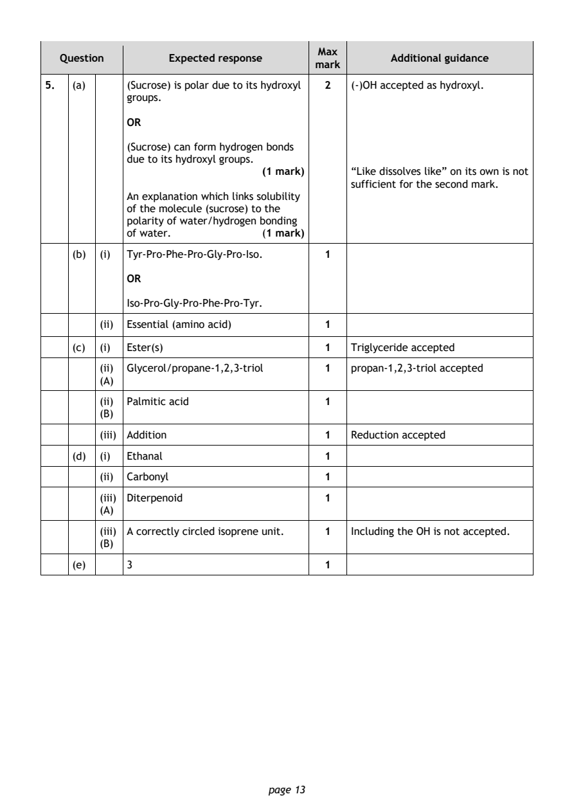
Selectable page text
Max
Question Expected response Additional guidance
mark
5. (a) (Sucrose) is polar due to its hydroxyl 2 (-)OH accepted as hydroxyl.
groups.
OR
(Sucrose) can form hydrogen bonds
due to its hydroxyl groups.
(1 mark) “Like dissolves like” on its own is not
sufficient for the second mark.
An explanation which links solubility
of the molecule (sucrose) to the
polarity of water/hydrogen bonding
of water. (1 mark)
(b) (i) Tyr-Pro-Phe-Pro-Gly-Pro-Iso. 1
OR
Iso-Pro-Gly-Pro-Phe-Pro-Tyr.
(ii) Essential (amino acid) 1
(c) (i) Ester(s) 1 Triglyceride accepted
(ii) Glycerol/propane-1,2,3-triol 1 propan-1,2,3-triol accepted
(A)
(ii) Palmitic acid 1
(B)
(iii) Addition 1 Reduction accepted
(d) (i) Ethanal 1
(ii) Carbonyl 1
(iii) Diterpenoid 1
(A)
(iii) A correctly circled isoprene unit. 1 Including the OH is not accepted.
(B)
(e) 3 1
page 13PDF page 14
Paper 2, Question 6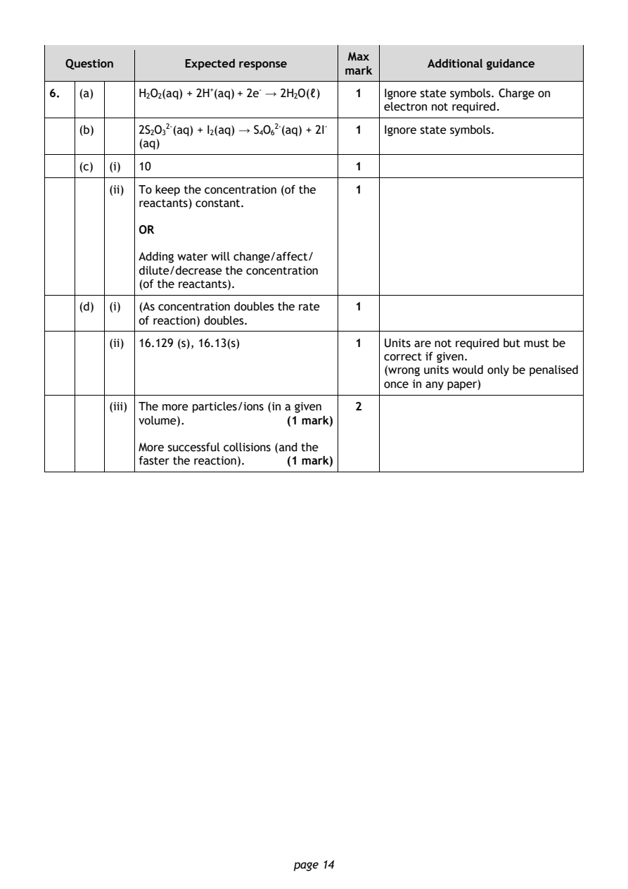
Selectable page text
Max
Question Expected response Additional guidance
mark
6. (a) H₂O₂(aq) + 2H⁺(aq) + 2e⁻ → 2H₂O(ℓ) 1 Ignore state symbols. Charge on
electron not required.
(b) 2S₂O₃²⁻(aq) + I₂(aq) → S₄O₆²⁻(aq) + 2I⁻ 1 Ignore state symbols.
(aq)
(c) (i) 10 1
(ii) To keep the concentration (of the 1
reactants) constant.
OR
Adding water will change/affect/
dilute/decrease the concentration
(of the reactants).
(d) (i) (As concentration doubles the rate 1
of reaction) doubles.
(ii) 16.129 (s), 16.13(s) 1 Units are not required but must be
correct if given.
(wrong units would only be penalised
once in any paper)
(iii) The more particles/ions (in a given 2
volume). (1 mark)
More successful collisions (and the
faster the reaction). (1 mark)
page 14PDF page 15
Paper 2, Question 7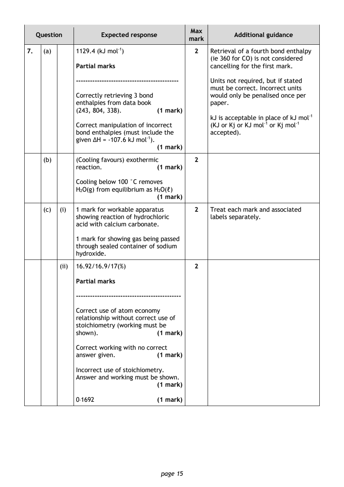
Selectable page text
Max
Question Expected response Additional guidance
mark
7. (a) 1129.4 (kJ mol⁻¹) 2 Retrieval of a fourth bond enthalpy
(ie 360 for CO) is not considered
Partial marks cancelling for the first mark.
-------------------------------------------- Units not required, but if stated
must be correct. Incorrect units
Correctly retrieving 3 bond would only be penalised once per
enthalpies from data book paper.
(243, 804, 338). (1 mark)
kJ is acceptable in place of kJ mol⁻¹
Correct manipulation of incorrect (KJ or Kj or KJ mol⁻¹ or Kj mol⁻¹
bond enthalpies (must include the accepted).
given ΔH = -107.6 kJ mol⁻¹).
(1 mark)
(b) (Cooling favours) exothermic 2
reaction. (1 mark)
Cooling below 100 °C removes
H₂O(g) from equilibrium as H₂O(ℓ)
(1 mark)
(c) (i) 1 mark for workable apparatus 2 Treat each mark and associated
showing reaction of hydrochloric labels separately.
acid with calcium carbonate.
1 mark for showing gas being passed
through sealed container of sodium
hydroxide.
(ii) 16.92/16.9/17(%) 2
Partial marks
---------------------------------------------
Correct use of atom economy
relationship without correct use of
stoichiometry (working must be
shown). (1 mark)
Correct working with no correct
answer given. (1 mark)
Incorrect use of stoichiometry.
Answer and working must be shown.
(1 mark)
0⋅1692 (1 mark)
page 15PDF page 16
Paper 2, Question 8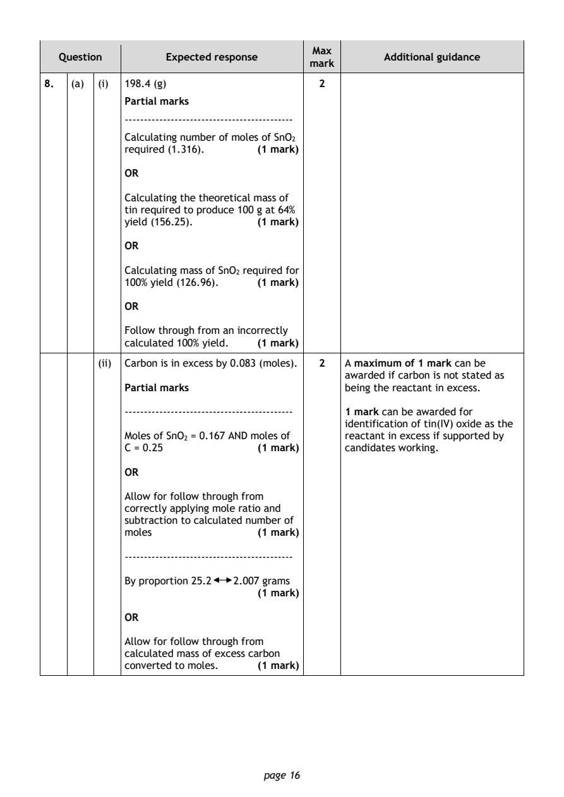
Selectable page text
Max
Question Expected response Additional guidance
mark
8. (a) (i) 198.4 (g) 2
Partial marks
--------------------------------------------
Calculating number of moles of SnO₂
required (1.316). (1 mark)
OR
Calculating the theoretical mass of
tin required to produce 100 g at 64%
yield (156.25). (1 mark)
OR
Calculating mass of SnO₂ required for
100% yield (126.96). (1 mark)
OR
Follow through from an incorrectly
calculated 100% yield. (1 mark)
(ii) Carbon is in excess by 0.083 (moles). 2 A maximum of 1 mark can be
awarded if carbon is not stated as
Partial marks being the reactant in excess.
-------------------------------------------- 1 mark can be awarded for
identification of tin(IV) oxide as the
Moles of SnO₂ = 0.167 AND moles of reactant in excess if supported by
C = 0.25 (1 mark) candidates working.
OR
Allow for follow through from
correctly applying mole ratio and
subtraction to calculated number of
moles (1 mark)
--------------------------------------------
By proportion 25.2 2.007 grams
(1 mark)
OR
Allow for follow through from
calculated mass of excess carbon
converted to moles. (1 mark)
page 16PDF page 17
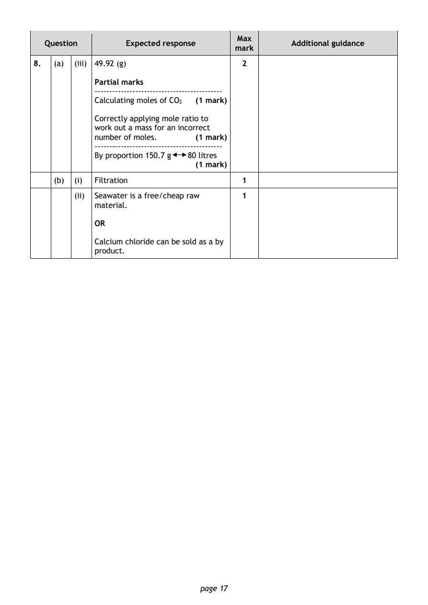
Selectable page text
Max
Question Expected response Additional guidance
mark
8. (a) (iii) 49.92 (g) 2
Partial marks
--------------------------------------------
Calculating moles of CO₂ (1 mark)
Correctly applying mole ratio to
work out a mass for an incorrect
number of moles. (1 mark)
--------------------------------------------
By proportion 150.7 g 80 litres
(1 mark)
(b) (i) Filtration 1
(ii) Seawater is a free/cheap raw 1
material.
OR
Calcium chloride can be sold as a by
product.
page 17PDF page 18
Paper 2, Question 9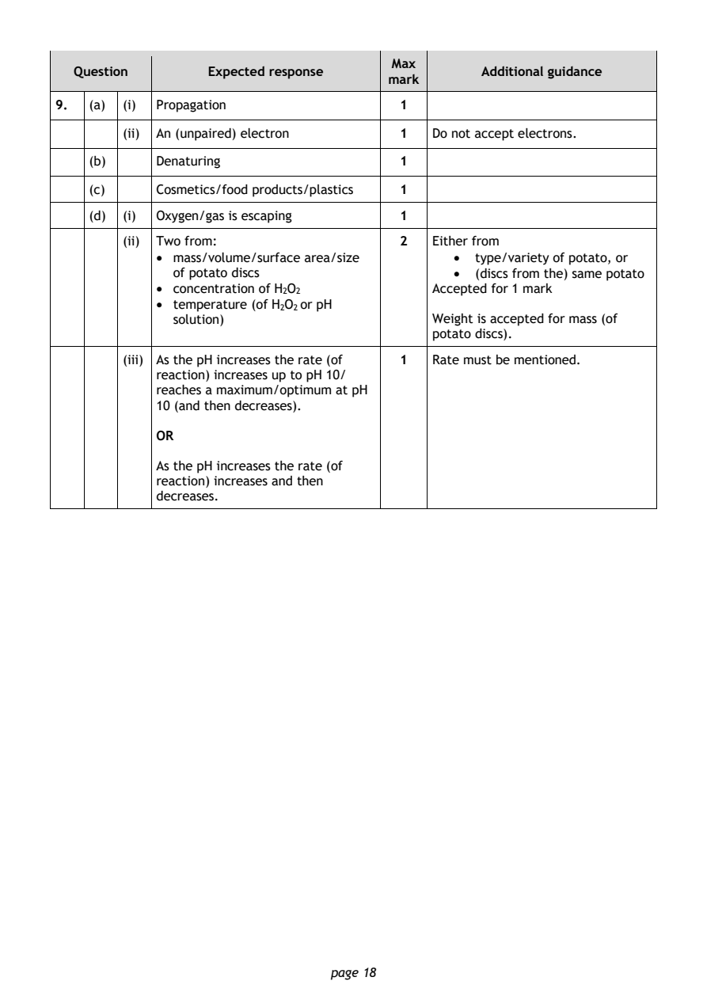
Selectable page text
Max
Question Expected response Additional guidance
mark
9. (a) (i) Propagation 1
(ii) An (unpaired) electron 1 Do not accept electrons.
(b) Denaturing 1
(c) Cosmetics/food products/plastics 1
(d) (i) Oxygen/gas is escaping 1
(ii) Two from: 2 Either from
• mass/volume/surface area/size • type/variety of potato, or
of potato discs • (discs from the) same potato
• concentration of H₂O₂ Accepted for 1 mark
• temperature (of H₂O₂or pH
solution) Weight is accepted for mass (of
potato discs).
(iii) As the pH increases the rate (of 1 Rate must be mentioned.
reaction) increases up to pH 10/
reaches a maximum/optimum at pH
10 (and then decreases).
OR
As the pH increases the rate (of
reaction) increases and then
decreases.
page 18PDF page 19
Paper 2, Question 10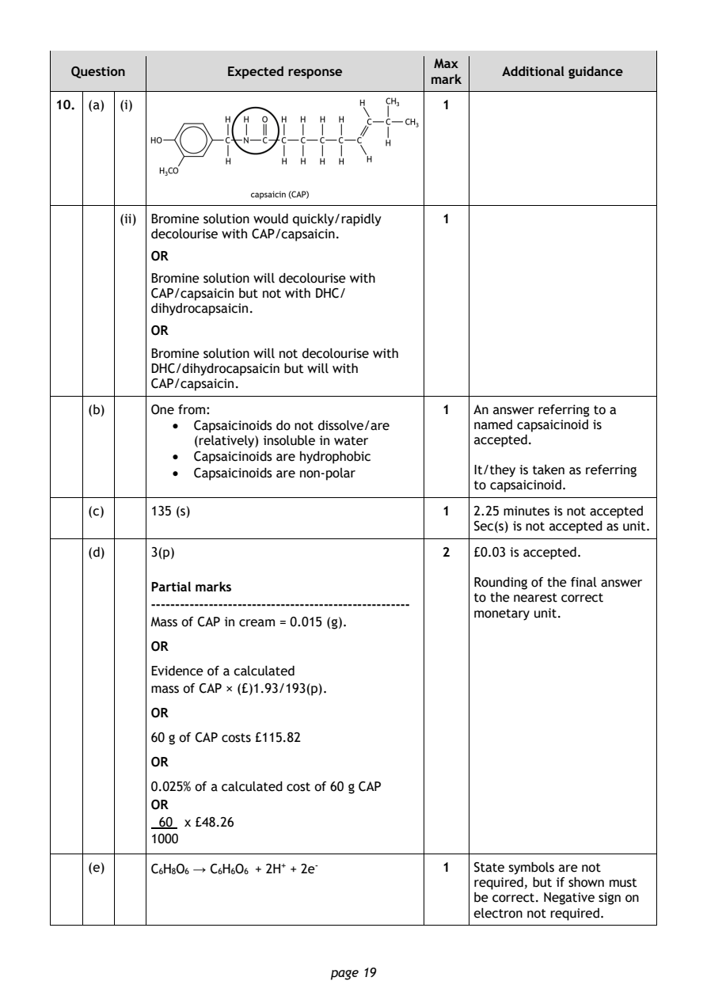
Selectable page text
Max
Question Expected response Additional guidance
mark
10. (a) (i) 1
(ii) Bromine solution would quickly/rapidly 1
decolourise with CAP/capsaicin.
OR
Bromine solution will decolourise with
CAP/capsaicin but not with DHC/
dihydrocapsaicin.
OR
Bromine solution will not decolourise with
DHC/dihydrocapsaicin but will with
CAP/capsaicin.
(b) One from: 1 An answer referring to a
• Capsaicinoids do not dissolve/are named capsaicinoid is
(relatively) insoluble in water accepted.
• Capsaicinoids are hydrophobic
• Capsaicinoids are non-polar It/they is taken as referring
to capsaicinoid.
(c) 135 (s) 1 2.25 minutes is not accepted
Sec(s) is not accepted as unit.
(d) 3(p) 2 £0.03 is accepted.
Rounding of the final answer
Partial marks
to the nearest correct
------------------------------------------------------
monetary unit.
Mass of CAP in cream = 0.015 (g).
OR
Evidence of a calculated
mass of CAP × (£)1.93/193(p).
OR
60 g of CAP costs £115.82
OR
0.025% of a calculated cost of 60 g CAP
OR
60 x £48.26
1000
(e) C₆H₈O₆ → C₆H₆O₆ + 2H⁺ + 2e⁻ 1 State symbols are not
required, but if shown must
be correct. Negative sign on
electron not required.
page 19PDF page 20
Paper 2, Question 11Selectable page text
Max
Question Expected response Additional guidance
mark
11. Award 1 mark where the candidate 3
has demonstrated, at an appropriate
level, a limited understanding of the
chemistry involved. They have made
some statement(s) which are
relevant to the situation, showing
that they have understood at least a
little of the chemistry within the
problem.
Award 2 marks where the candidate
has demonstrated, at an appropriate
level, a reasonable understanding of
the chemistry involved. They make
some statement(s) which are
relevant to the situation, showing
that they have understood the
problem.
Award 3 marks where the candidate
has demonstrated, at an appropriate
level, a good understanding of the
chemistry involved. They show a
good comprehension of the
chemistry of the situation and
provide a logically correct answer to
the question posed. This type of
response might include a statement
of the principles involved, a
relationship or an equation, and the
application of these to respond to
the problem. The answer does not
need to be ‘excellent’ or ‘complete’
for the candidate to gain full marks.
Award 0 marks where the candidate
has not demonstrated, at an
appropriate level, an understanding
of the chemistry involved. There is
no evidence that they have
recognised the area of chemistry
involved, or they have not given any
statement of a relevant chemistry
principle. Award this mark also if the
candidate merely restates the
chemistry given in the question.
page 20PDF page 21
Paper 2, Question 12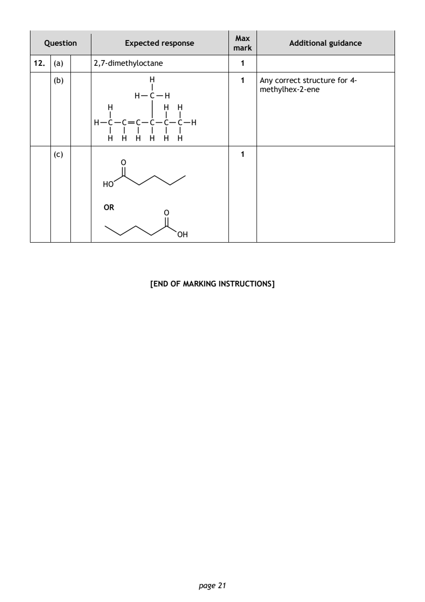
Selectable page text
Max
Question Expected response Additional guidance
mark
12. (a) 2,7-dimethyloctane 1
(b) 1 Any correct structure for 4-
methylhex-2-ene
(c) 1
[END OF MARKING INSTRUCTIONS]
page 21